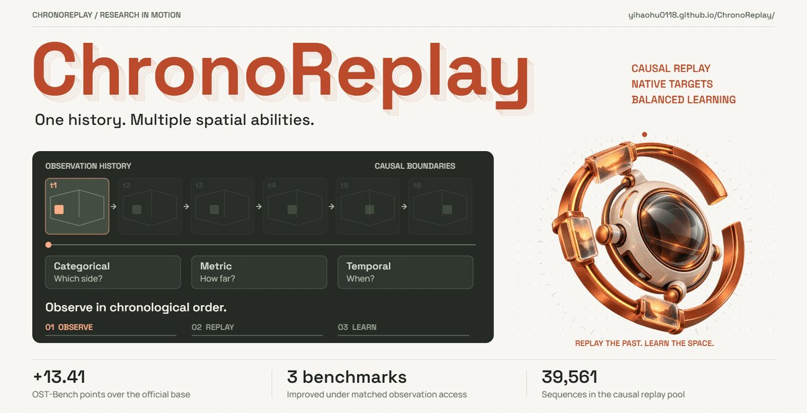
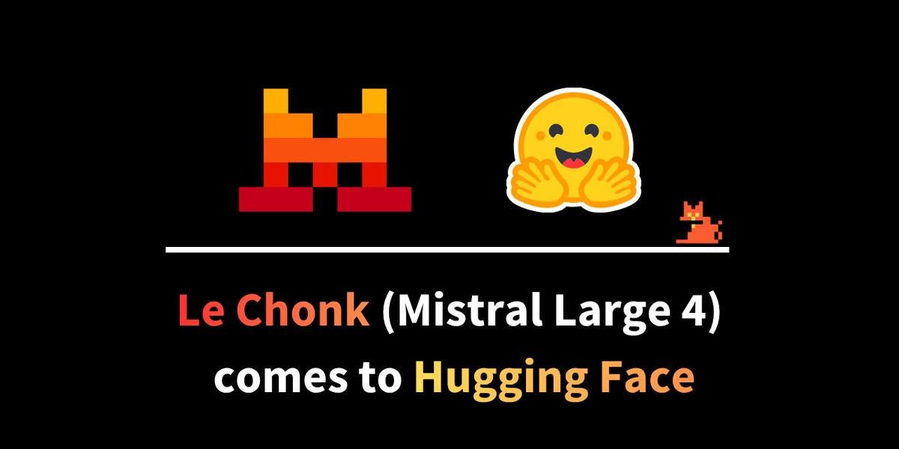
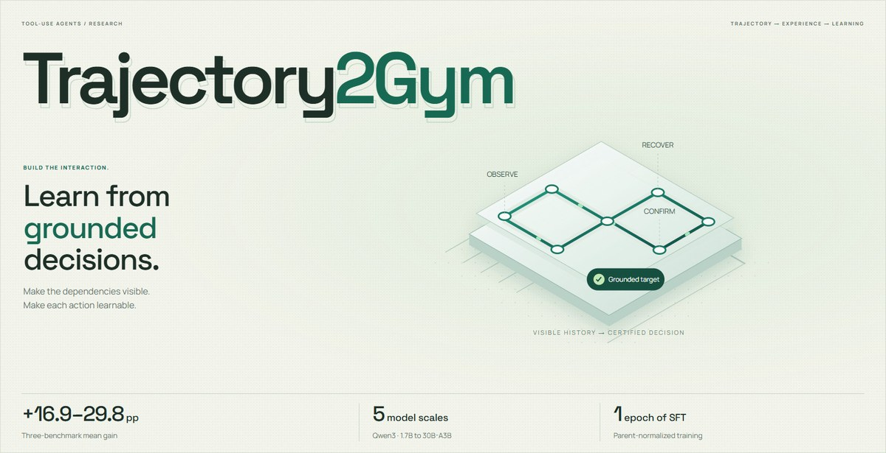
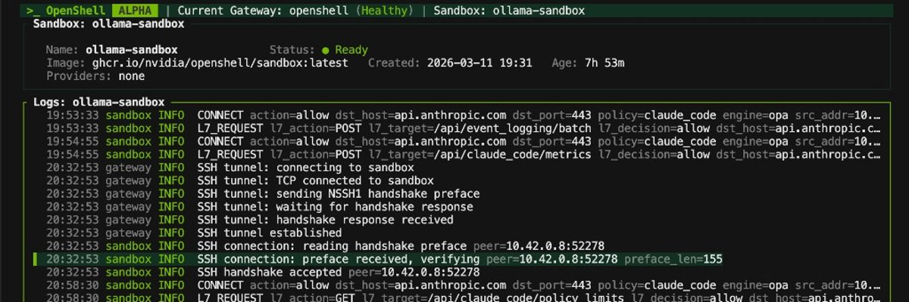

Here I write about the most important and up-to-date topics in AI that I find interesting: new models, papers and tools, what they do and why they matter. Every post is published on several platforms, so read it on your favorite one.

October 30, 2026 · Deep dive
ChronoReplay Shows Fine-Tuning a Spatial VLM on One Answer Format Can Hurt the Rest
ChronoReplay is a post-training recipe for spatial vision-language models. It replays categorical, metric and temporal supervision as chronologically ordered episodes with native-format targets and balanced loss families. On Qwen3-VL-8B it improves OVO-S-Bench, OST-Bench and UCS-Bench together, including +13.41 points on OST-Bench. It matters for anyone building streaming perception for robots or embodied agents, because the gains come from supervision design rather than a new memory module.

October 29, 2026 · Deep dive
Mistral Large 4 Makes Self-Hosted Coding Agents Practical, on Eight GPUs or a 512 GB Mac
Mistral has released open weights for Mistral Large 4, a 1T-parameter multimodal Mixture-of-Experts model with about 49B active parameters per token. On Artificial Analysis it ties the leading open model on agentic coding while using fewer tokens. This story covers the architecture, the coding and security benchmarks, and what self-hosting it actually takes in hardware and throughput.

October 28, 2026 · Deep dive
Trajectory2Gym Lets a 4B Qwen3 Agent Beat the 30B Base on Tau2 by Fixing the Data
Trajectory2Gym is a data-construction method for tool-use agents. It synthesizes interactions around multi-step dependencies the training pool lacks and supervises only actions that are grounded in the agent's visible history. With plain supervised fine-tuning on five Qwen3 sizes, it raises the equal-weight three-benchmark mean (Tau1, Tau2, BFCL) by 16.9 to 29.8 points, with the largest gains on stateful, multi-turn tasks.
October 27, 2026 · Deep dive
OpenAI's GPT-6.1 Terra Makes Computer-Use Agents Cheap. Reliability Is Now the Real Test
OpenAI's GPT-6.1 Terra is priced at $1/$5 per million input/output tokens, down from $2/$12 for GPT-5.6 Terra. Independent tests from Artificial Analysis show higher scores and a much lower hallucination rate. The story covers what changed, which effort settings are actually cost-efficient, and why reliability now matters more than price when deciding whether to deploy computer-use agents.
October 26, 2026 · Deep dive
NVIDIA Just Opened the Data Engine Behind GR00T, and Says It Costs 125x Less
NVIDIA's GEAR lab has open-sourced Flora, a set of models that watch human and robot video and label what happened and how well it went. The team says Flora matches Astra-level performance at 125x lower cost, labels 200K hours of video a day on 500 GPUs, and is used to train GR00T. The release points to data engines, not only policy architectures, as a lever for embodied AI.

October 25, 2026 · Weekly roundup
Kimi K3.1 Pro and DeepSeek Close In on the Frontier, So the Fight Moves to Agent Trust
With open models nearly at the top, the week's most discussed agent work was about sandboxes, offline training and verifiers. Open-weight models are closing in on the frontier rankings, so the week's attention moved to the layers that make agents trustworthy: isolated training environments, policy-enforced runtimes, formal verification and world-model checks on every action.